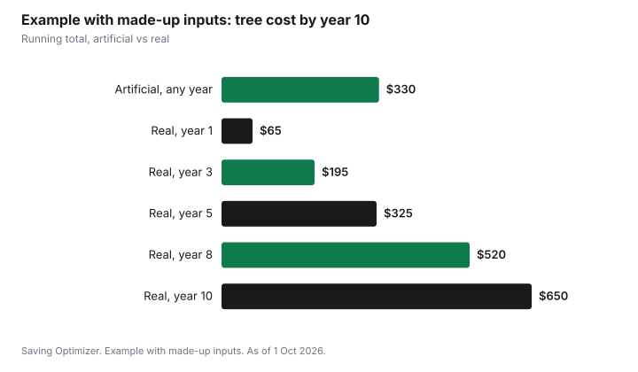

Events · Canada
Real vs Artificial Christmas Tree: Cost Over Time in Canada

An artificial Christmas tree is cheaper than buying a real one every year only if you keep it long enough. To find your break-even point, divide the artificial tree's price, plus any storage cost, by the number of years you will realistically use it, and compare that yearly cost with what a real tree costs you each year, including the stand, delivery and disposal. If the artificial tree's yearly cost is lower, it wins on money. Disposal matters too: many cities collect real trees at the curb in January, while an artificial tree eventually goes out as bulky garbage. The rest is preference: smell, setup time, storage space and how your household feels about each option.
Key takeaways
- Break-even: artificial price ÷ years kept, compared with a real tree's yearly all-in cost.
- Count everything: stand, delivery, lights, storage bins, and disposal.
- Toronto collects real trees curbside on designated January days; remove all decorations and do not bag the tree.
- Toronto asks residents to take an artificial tree apart if possible and set it out as an oversized item.
- Storage space has a cost if it means a bigger locker or no room for other things.
- Example with made-up inputs: a $300 artificial tree breaks even with a $65-a-year real tree in about year 5.
Real tree costs
The price of a real tree depends on the species, the height, where you buy and how close to Christmas you buy. Lots, garden centres, big-box stores and cut-your-own farms all sell trees, and prices are often posted per tree or by height. Beyond the tree itself, there are a few smaller costs.
| Item | One-time or yearly | Your cost |
|---|---|---|
| The tree | Yearly | |
| Delivery or transport (or fuel to a farm) | Yearly | |
| Tree stand that holds water | One-time, lasts years | |
| Netting, tree bag or sheet to protect floors | Yearly or reusable | |
| Disposal | Usually free with city pickup; a fee if you use a private service |
A cut-your-own farm can be an outing as well as a purchase, which some families count as part of the holiday. If you buy from a lot, ask whether delivery is included and whether they offer a fresh cut at the base so the tree takes up water.
Artificial tree break-even
Artificial trees range widely in price and quality. A cheaper tree may shed or sag after a few seasons; a more expensive one may last much longer. The useful number is not the price tag but the cost per year of use.
| Step | Artificial tree | Real tree |
|---|---|---|
| Up-front cost | Tree + storage bag or box | Stand (once) |
| Yearly cost | Lights if not pre-lit, replacement bulbs | Tree + delivery + disposal |
| Years kept | Your honest estimate | |
| Cost per year | Up-front ÷ years + yearly cost | Yearly cost + stand ÷ years |
Be honest about the years. Many people replace an artificial tree because they move, because the style changes, or because the lights fail on a pre-lit tree. If you are not confident you will keep it for many seasons, use a smaller number.
Pre-lit or not
A pre-lit tree saves setup time, but if a section of lights fails, repairs can be fiddly and the tree may be replaced earlier. A tree without lights lets you replace a string of lights on its own. If you buy new strings, compare the wattage printed on each box; it matters most if lights run many hours a day.
Disposal and municipal pickup
Disposal rules vary by city, so check your municipality's waste page. In Toronto, the City collects Christmas trees curbside on designated days in January, and trees can also be taken to a drop-off depot year-round. The City asks residents to remove all lights, tinsel and decorations, not to set the tree out in a stand, skirt or any kind of bag, and to place it next to the garbage bin, clear of snow and ice. Trees missed in January go out when yard waste collection resumes in spring. People in apartment and condo buildings are told to speak to their property manager.
For artificial trees, Toronto asks residents to take the tree apart, if possible, and set it out as an oversized item on garbage day. If yours is still in good shape, a buy-nothing group, a charity shop or a neighbour may take it; see buy-nothing groups.
| Tree | What Toronto asks |
|---|---|
| Real tree, January | Curbside on designated January days; remove all decorations; no stand, skirt or bag; next to garbage bin |
| Real tree, missed | Set out when yard waste resumes in spring, or take to a drop-off depot |
| Real tree, apartment or condo | Speak to your property manager |
| Artificial tree | Take apart if possible and set out as an oversized item on garbage day |
Storage
An artificial tree takes space for eleven months a year. In a house with a basement, that may cost nothing. In a small condo, it may mean a storage locker or giving up closet space. If storage costs money, add it to the artificial tree's yearly cost. A sturdy bag or box protects branches and makes the tree last longer, so count that in the up-front cost.
Safety
With a real tree, keep the stand filled with water every day, keep the tree away from heaters, fireplaces and candles, and take it down once it is dry and dropping needles. With any tree, check light strings for damaged wires before use, use lights meant for indoor use inside, and turn them off when you leave home or go to bed. Your local fire department's holiday safety page is a good place to check for local advice.
Example with made-up inputs: when does artificial pay off?
These numbers are an example with made-up inputs. They are not store prices. A household compares a $300 artificial tree plus a $30 storage bag ($330 up front) with a real tree that costs $55 a year plus $10 for delivery, using a stand they already own. The real tree costs $65 a year. The artificial tree has no yearly cost because it is pre-lit and stored in the basement.
| Year | Artificial (running total) | Real (running total) |
|---|---|---|
| 1 | $330 | $65 |
| 2 | $330 | $130 |
| 3 | $330 | $195 |
| 4 | $330 | $260 |
| 5 | $330 | $325 |
| 6 | $330 | $390 |
| 8 | $330 | $520 |
| 10 | $330 | $650 |
The running totals cross at about year five. If the household keeps the artificial tree for eight to ten years, it saves money. If it replaces the tree after three or four years, the real tree was cheaper. If a storage locker cost $10 a month were needed, the artificial tree would never catch up.

Decision
| If this sounds like you | Lean towards |
|---|---|
| You have free storage and will keep a tree many years | Artificial |
| You move often or have little storage | Real |
| You enjoy picking a tree as an outing | Real |
| You want the lowest setup effort each year | Artificial, pre-lit |
| Your city collects trees at the curb | Real tree disposal is easy |
| You want to avoid a large up-front cost | Real |
Whichever you choose, the tree is one line in the season's decor budget. The guide to holiday decorations without overspending covers lights, ornaments and storage, and the December spending plan puts decor beside gifts and food.
Sources
- City of Toronto, Yard Waste, toronto.ca, as of 1 Oct 2026. Christmas trees collected on designated January days and at drop-off depots; remove lights, tinsel and decorations; no stand, skirt or bag; next to garbage bin; spring yard waste for missed trees; apartment residents speak to property manager; artificial trees as oversized items.
- The tree prices, running totals, table and chart in the example are an example with made-up inputs.
Frequently asked questions
Is a real or artificial Christmas tree cheaper?
It depends on how long you keep the artificial tree. Divide its price, plus storage, by the years you will use it and compare that with a real tree's yearly cost including delivery and disposal. In a made-up example, a $330 artificial tree broke even with a $65-a-year real tree at about year five.
How do I get rid of a real Christmas tree in Toronto?
Toronto collects real trees curbside on designated January days. Remove all lights, tinsel and decorations, do not set it out in a stand, skirt or bag, and place it next to your garbage bin clear of snow and ice. In apartments and condos, speak to your property manager.
How do I dispose of an artificial Christmas tree?
In Toronto, take it apart if possible and set it out as an oversized item on garbage day. If it is still usable, offer it to a buy-nothing group, a charity shop or a neighbour. Other cities have their own rules.
Is a pre-lit artificial tree worth it?
It saves setup time, but if lights fail, repairs can be hard and the tree may be replaced sooner. A tree without lights lets you replace a light string on its own.
Researched and drafted with AI assistance and fact-checked against official Canadian sources. How we create content.
Disclosure: Saving Optimizer may earn a commission if a partner link is added later, such as a home or cash-back offer type. No partnership is claimed on this page, and no store or brand is ranked. Education only.